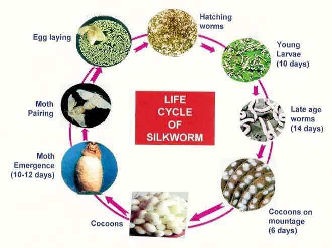
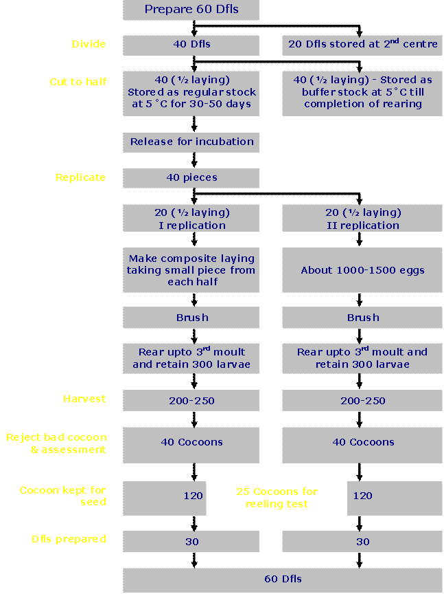
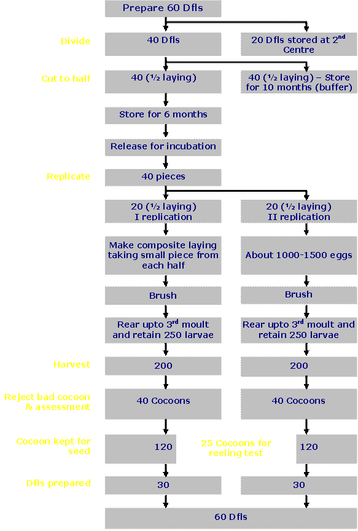

|
|
Preservation of silkworms
Land races and evolved breeds
constitute important components of biodiversity for posterity maintenance of
silkworm races/breeds without losing their original characters. The criterion
for selection of material for the next generation is pupation rate followed
by fecundity, larval duration and cocoon characters like cocoon weight,
cocoon shell weight, cocoon shell ratio, cocoon yield, filament length,
denier, neatness, raw silk %, raw silk quality and reelability.
Life cycle of mulberry silkworm, Bombyx
mori is about 50 days with minor variation depending on climate. Egg
stage lasts for 10 days, larval stage
for 20 – 30 days and pupal stage takes 10 days.

Multivoltine breeds
are reared 6 times in a year,
bivoltine breeds twice and univoltine races only once in favourable
season. Both multivoltine and bivoltine breeds are brushed in “composite
laying pattern”. After 3rd moult, all the larvae are counted and
300 larvae in multivoltine and 250 larvae in bivoltine breeds are retained in
each replication. For one silkworm breed, 2 composite layings are brushed.
The mature silk worms are collected in time and mounted on plastic
collapsible mountage. Soon after mounting of all the larvae of a batch, the
mountage is covered with nylon net to avoid mixing of larvae from one
mountage to another. After harvesting of cocoons, defective cocoons, viz.,
double, melted, pointed, thin end,
etc. are sorted out and recorded. Rigid selection should be avoided. Only
good cocoons conforming to breed characters are kept in cocoon preservation
box for emergence. After emergence, moths are allowed for random mating.
After oviposition, individual moth examination is practiced for recording
pebrine incidence.
Rearing plan recommended by an
expert committee on the maintenance of genes and genotypes of silkworm
germplasm is followed (Annonymous, 1990). Attention is given for maintaining
original characters as per the passport data to avoid mixing of accessions.
Efforts are being made to reduce the number of rearings to avoid genetic
erosion, inbreeding depression and to reduce the cost of maintenance through
suitable hibernation schedules. Plans for the maintenance of multivoltine and
bivoltine silkworm breeds are given below.
Plan of Maintenance of Multivoltine Silkworm Breeds

Plan of Maintenance of Bivoltine Silkworm Breeds

Silkworm Breed/ Hybrid Improvement
Silkworm Breeding has passed through
an exciting phase of development over the last fifty years. In spite of the
quantum jump in mulberry silk
production, more than 90% of the silk produced in the country comes from
multi x multi and multi x bi hybrids. In the gradual development process, the
CSB institutions, state organizations and universities had developed some
useful multivoltine races like Kolar Gold, Kollegal Jawan, Mysore Princess
and Hosa Mysore, etc. Later, with the
introduction of bivoltines (NB7, NB18,
NB4D2), a phenomenal switch over from multivoltine hybrids to cross breeds took place and the cocoon
yield could be increased to about 40 kg/100 dfls. However, significant breakthrough in
evolution of superior silkworm breeds / hybrids could be achieved in late
nineties when CSR&TI, Mysore in collaboration with JICA developed CSR
bivoltine breeds, the hybrids (both single as well as double hybrids) have
high yield potentiality of more than 70 kg/100 dfls coupled with high shell
ratio (22-23%) and high grade quality of silk (2A-4A). Specific researches have led to development
of robust bivoltine hybrids suitable
to high temperature condition with cocoon yield of 55-60 kg/100 dfls. This
endeavor could help to develop a system to rear bivoltine throughout the year
under the tropical condition of India. Further, in order to facilitate
the grainage operations, sex limited bivoltine breeds, CSR8(SL) and CSR2(SL)
have been evolved which enables the
seed farmer to send the female cocoons (yellow coloured) directly for
commercial reeling while the white coloured male cocoons can be sold to
grainages. This saves 40% of the
production cost besides ensuring the quality eggs with 100% purity. With
continued breeding efforts, productive
as well as hardy polyvoltine breeds / hybrids, Cauvery (CSR&TI, Mysore) with
cocoon yield of about 55 kg/100 dfls, filament length of over 900 m, silk grade of A-2A and partially resistant
to diseases; Swarnandhra (APSSRDI, Hindupur) with cocoon yield of
about 50 kg/100 dfls and Kolar Gold
(CSR&TI, Mysore) are becoming very
popular. Similar breeding programmes carried out in different parts of the
country led to development of hybrids suitable for specific regions. Some of
the silkworm hybrids under commercial
rearing in different regions of the country are listed out in Table-3.
Table-3:
Silkworm hybrids under commercial rearing
in different regions
|
Region
|
Favorable
months
|
Unfavourable
months
|
|
Hybrids
|
Yield
potentials (kg/100 dfls)
|
Hybrids
|
Yield
potentials (kg/100 dfls)
|
|
South zone
|
PM x NB4D2
BL24 x NB4D2
CSR2 x CSR4
CSR2 x CSR5
APM1 x APS8
PM x CSR2
|
40-65
|
PM x NB4D2
CSR18 x CSR19
KSO1 x SP2
APM1 x APS8
PM x CSR2
|
50-55
|
|
North and North- East
|
Nistari x Biv
Nistari x G
|
30-50
|
Nistari x Nistari
|
30-35
|
|
North and North- West
|
SH6 x NB4D2
CSR2 x CSR4
CSR2 x CSR5
|
50-60
|
SH6 x NB4D2
CSR18 x CSR19
|
50
|
Further,
in order to facilitate the grainage operations, sex limited bivoltine breeds,
CSR8(SL) and CSR2(SL) have been evolved by
CSR&TI, Mysore which enables the seed farmer to send the female
cocoons (yellow coloured) directly for commercial reeling while the white
coloured male cocoons can be sold to grainages for egg production. This saves 40% of the production cost
besides ensuring the quality eggs with 100% purity.
CSR-8 (Sex Limited) Cocoons
|
|
Back
|